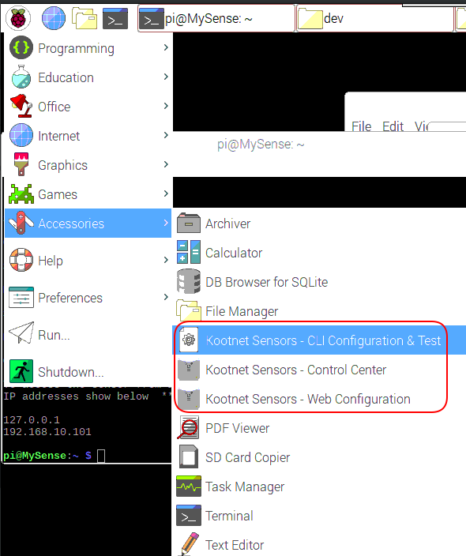

Help Document for KootNet Sensor Units
As of right now, a Raspberry Pi is required with the option of adding one or more supported sensors.
To make your own sensor, find the instructions on the Programs Website or in the Help menu of Kootnet Sensors – Control Center.
Managing Sensor Units from Raspbian
The shortcut “Kootnet Sensors - Control Center” opens a GUI Python program to manage up to 16 sensors at a time. See the “Help” menu in the Control Center for more information.
The first IP in “Kootnet Sensors - Control Center” is a local loop back address (127.0.0.1) to manage the device the program is running on.
The shortcut “Kootnet Sensors – Configuration & Test” opens up the following in order, one after another to change or not. At the end of the reconfiguration, it displays the new configuration and current sensor readings on the screen.
Asks to change user credentials for HTTP Authentication
Installed Sensors – Enable or disable supported sensors
Sensor Configuration – Adjust SQL recording settings
dhcpcd.conf – Adjust IP settings
wpa_supplicant.conf – Adjust automatic wireless connections
** Note: Microsoft Windows installers are available for Kootnet Sensors – Control Center on the website's downloads page **

Sensor Test
This will print the current configuration & sensor readings to the screen. This is the same program that’s run at the end of the “Kootnet Sensors – Configuration & Test”
sudo /home/kootnet_data/python-env/bin/python3 /opt/kootnet-sensors/test_sensors.py
Program Auto Start
The sensor programs automatically start and restart them selves through systemd as services.
Run the following commands to disable and stop Kootnet Sensor service.
sudo systemctl disable KootnetSensors && sudo systemctl stop KootnetSensors
To re-enable and start the services, run the following command.
sudo systemctl enable KootnetSensors && sudo systemctl start KootnetSensors
Configuration & File Locations
Main Program Folders
KootNet sensor – /opt/kootnet-sensors/
KootNet Sensors – Control Center – /opt/kootnet-control-center/
SQLite3 Database
Location: /home/kootnet_data/
SensorRecodringDatabase.sqlite – SQLite3 database holding all recorded sensor readings
Configuration Files
Location: /etc/kootnet/
installed_sensors.conf – Supported & enabled sensors
control_center.conf – Sensor’s configuration file
sql_recording.conf – Sensor’s configuration file
SSL Files for HTTPS
Location: /opt/kootnet-sensors/http_server/ssl_files/
kootnet_default.key – SSL Private Key
kootnet_default.csr – SSL Certificate Signing Request
kootnet_default.crt – SSL Certificate
Log Files
Location: /home/kootnet_data/logs/
Primary_log.txt – Contains program logs
Sensors_log.txt – Contains sensor hardware logs
Network_log.txt – Contains network related logs
Clean Upgrade Service Scripts
These 2x Upgrade scripts uninstall the systemd service, deletes Kootnet Sensors program & shortcuts then finally re-installs the program by the chosen method. The configuration and data files remain untouched.
The following SensorCleanUpgradeOnline command upgrades online through HTTP & SensorCleanUpgradeSMB upgrades through a windows share.
sudo systemctl start SensorCleanUpgradeOnline
sudo systemctl start SensorCleanUpgradeSMB ** DO NOT USE UNTIL YOU SETUP THE OPTIONS IN /opt/kootnet-sensors/scripts/update_programs_smb.sh **
** SensorCleanUpgradeSMB Requires: Configuration in /opt/kootnet-sensors/scripts/update_programs_smb.sh
** SensorCleanUpgradeOnline Optional: Configure /opt/kootnet-sensors/scripts/update_programs_online.sh to use your own HTTP Server
Uninstall Sensor
Software
This
will remove all sensor software and ask to remove
Kootnet
Sensors – Control Center (If installed). Sensor data &
logs
are untouched.
sudo bash /home/kootnet_data/scripts/uninstall_kootnet-sensors.sh